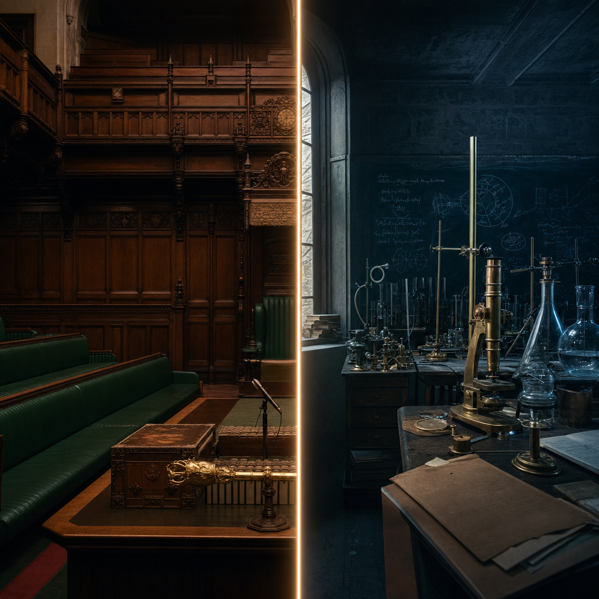

How Oxford and Cambridge quietly split Britain's elite in two — one makes rulers, the other makes discoverers.
Britain's two ancient universities have quietly divided the country's elite between them. Oxford has produced 31 of the UK's Prime Ministers; Cambridge just 15. Flip to science and the mirror appears: 79 Nobel laureates are linked to Cambridge, only 30 to Oxford.
It is a clean trade. Oxford takes politics by a factor of two; Cambridge takes the Nobel by a factor of two and a half. One university makes rulers, the other makes discoverers.
We lump them together as "Oxbridge", a single word for a single elite. But the numbers tell a stranger story: not one factory, but two — each specialised in a different kind of power.

Look only at Downing Street and the picture is overwhelming. Of the 59 people who have ever held the office, 30 went to Oxford alone, 14 to Cambridge alone, and one — Henry Pelham — to both.
Together, Oxford and Cambridge account for 45 of those 59 Prime Ministers — more than three quarters of everyone who has ever run the country.
The pipeline is built, not accidental. The Oxford Union, founded in 1823 and nicknamed a "children's House of Commons", has trained at least twelve future PMs to debate; the Philosophy, Politics and Economics degree, created in the 1920s, became the standard apprenticeship for political life. Three of the last six Prime Ministers read PPE.
Zoom in further and the funnel gets almost absurd. A single Oxford college — Christ Church — has educated 13 Prime Ministers. That is fewer than Oxford's total, but more than the whole of Cambridge.
Narrow it again and a school appears inside the university. Twenty PMs went to Eton, and fourteen of them went on to Oxford. That one school-and-university funnel produced almost a quarter of every Prime Minister Britain has ever had.
The route to power is not "a good university". It is a corridor — Eton, then Oxford, then a college you could fit in a single quadrangle.
It was not always this way. In the 1700s the two universities were neck and neck for the premiership: six Oxford PMs to five from Cambridge. Cambridge stayed in the race through the nineteenth century.
Then it collapsed. From 1950 onward, Cambridge has produced exactly zero Prime Ministers, while Oxford produced thirteen. The contest the data captures is really the story of one university quietly leaving the field.
Cambridge has not sent anyone to Downing Street since Stanley Baldwin took office in 1923 — a drought of more than a century. Since 1937, every Prime Minister who attended an English university has gone to Oxford, an unbroken line from Attlee to Starmer.
The corridor is dominant, not total. Two Prime Ministers never attended any university at all: David Lloyd George, who trained as a solicitor, and James Callaghan, who left school at sixteen and is the only twentieth-century PM with no university.
Others slipped in by side doors — Gordon Brown and John Russell through Edinburgh, Bonar Law through Glasgow, Winston Churchill and John Major through no university whatsoever. The exceptions prove the channel can be bypassed, even at the very top.
Which makes the rule sharper, not softer. To reach Downing Street without Oxford is possible — but it is the deviation that gets remembered, precisely because almost everyone else took the same path.
One objection: maybe Oxford simply has more famous alumni. Wikidata records 39,259 notable people for Oxford against 31,284 for Cambridge, a quarter more. But scaling for that only sharpens the split. Per 10,000 notable alumni, Cambridge yields 25 Nobel laureates to Oxford's 8; Oxford yields 8 Prime Ministers to Cambridge's 5.
A caveat worth keeping visible: those alumni totals are a count of who is notable enough to appear on Wikidata, not of who enrolled — and a Nobel "link" can mean someone studied there or simply taught there later. Treat the numbers as a measure of association, not a census.
Even after every adjustment, the fork holds. The same two institutions, measured the same way, keep producing two different kinds of elite — and that division, more than any single statistic, is the real headline.